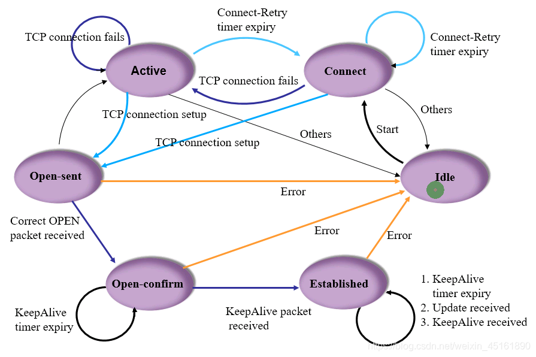

拖入文件或点击选择
拖入文件或点击选择
XML 编辑器

| No. | Time | Source | Destination | Protocol | Length | Info |
|---|---|---|---|---|---|---|
| 1 | 10:30:45.123 | 192.168.1.1 | 10.0.0.1 | TCP | 1500 | HTTP GET /index.html |
| 2 | 10:30:45.456 | 192.168.1.2 | 8.8.8.8 | DNS | 84 | Query example.com |
| 3 | 10:30:46.789 | 192.168.1.3 | 192.168.1.255 | ARP | 60 | Who has 192.168.1.4? |
数据包详情
点击上方数据包以查看详情